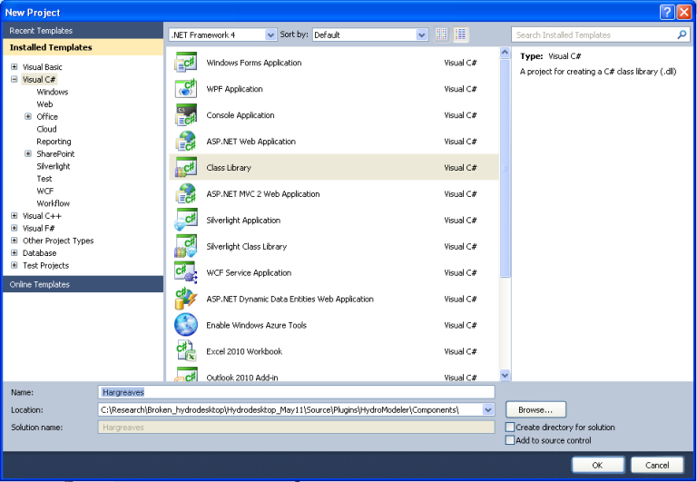
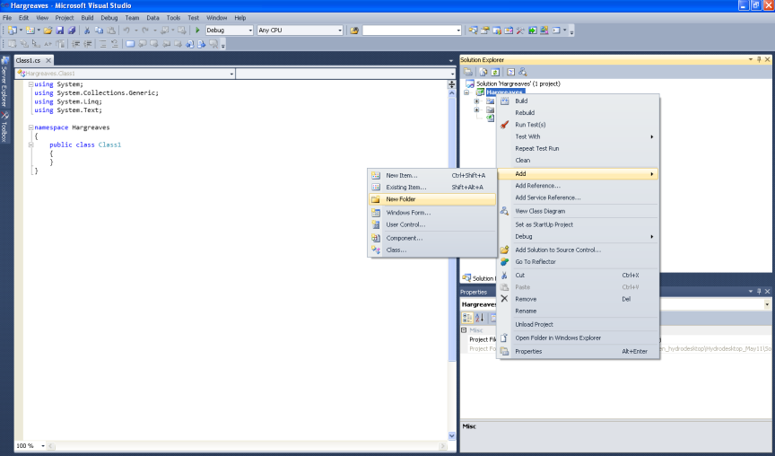
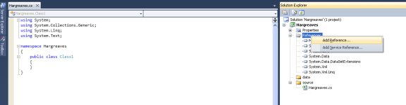
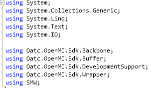
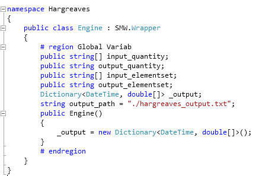

Tutorial 3: Creating a New Model Component
The purpose of this tutorial is to show how to create a new component from scratch. In this demonstration, using Visual Studio C#.
C# is an object oriented programming language designed for building a wide variety of applications that run on the .NET Framework. The .NET Framework is a Windows component that supports building and running of applications and Web services. The key components of the .NET Framework are the common language runtime and the class library. The class library is a collection of classes, interfaces, and value types that are included in the Microsoft .NET Framework. The class library is designed to be the foundation on which the .NET Framework applications, components, and controls are built.
Hargreaves Component Structure
Hargreaves is an Evapotranspiration model, that is simple in practical use. It requires only two easily accessible parameters, temperature and solar energy. The total incoming extra terrestrial solar radiation is calculated as a function in julien day. The Hargreaves component need three input exchange items (Maximum - Minimum - Average) daily Temperature, and gives an output exchange item (Daily Evapotranspiration)
Getting stared with Visual C#
- If you do not have access to Microsoft Visual Studio you can download Microsoft Visual C# 2010 for free from http://www.microsoft.com/express/Downloads/
- Choose the tab Visual Studio 2010 Express. Then select Visual C# 2010 Express Edition. Click Download and follow instructions to install.
- If you are learning C# or need a refresher there are many tutorials available on-line that can help. The address below will take you to Microsoft’s Development Network were they have a beginners learning center. There are several links available here for learning Visual Studio C# and Visual Studio Basic: http://msdn.microsoft.com/en-us/beginner/bb308734.aspx
Create Hargreaves component using Microsoft Visual C#.
- Open the start menu and from program choose Microsoft Visual studio, then Microsoft Visual studio.
.
2.Open the Visual studio C# and create a new project. choose Visual C#, Class Library, named as Hargreaves, Browse the location tab path and point to this path C:/Hydrodesktop_May11/Source/Plugins/HydroModeler/Components.

.
- Add two folders (source - data), copy class1.cs into source folder and rename it Hargreaves.cs

Adding References
A reference is a file that is required to run the code you have written. Usually a reference identifies a dll (Dynamic Linking Library) file. The references can be viewed by expanding the Reference option listed in the Solution Explorer window located on the upper right side of the page.
- Right click on Reference and select Add Reference.

.
- A window will pop up. Using the tabs, browse to C:/Hydrodesktop/Binaries/Plugins/HydroModeler, and add (Oatc.OpenMI.Sdk.Backbone.dll - Oatc.OpenMI.Sdk.Buffer.dll - Oatc.OpenMI.Sdk.DevelopmentSupport.dll - Oatc.OpenMI.Sdk.Wrapper.dll - OpenMI.Standard.dll)
- Navigate to C:/Hydrodesktop/Binaries/Plugins/HydroModeler/example_configuration/bin and add SMW.dll.
.
Namespaces
Namespaces allow you a way to organize your code. The “using” directive can be implemented as a way of accessing members of a namespace without having to type out their full name each time they are used. When a new project is created several common namespaces are inserted.
- Implement the using directive to add the namespaces of the references we add.

Create the Linkable component
1.Add a new class under the source folder and rename it as LinkableComponent (camel back typing).
.
2.Inherit the linkable engine class from Oatc.OpenMI.Sdk.Wrapper namespace.
.
Create the Configuration Xml
Configuration file define the exchange items (output - input) of the component, and the time horizon of the component (start - end - step) time.
- Add a xml file to the Data folder.
- Copy the configuration structure from the sample component into your config.xml.
.
- Hargreaves component have three input exchange items, one output exchange item.
- In output exchange item we define the Element set(ID - Description - path for output shape file, if necessary), and Quantity (ID - Dimensions - units - value type).
.
- In input exchange item we define Element set (ID - Description - path for input shape file, if necessary), and Quantity (ID - Dimensions - units - value type). Repeat for the rest of the exchange items
.
Create the omi file
omi is used to define (Linkable component- relative location for component dll-path for cofiguration.xml- input & output arguments)
- Create a xml file, add it under data folder and name it as Hargreaves.
- Change the file extension to omi.
- Define the relative path for the Hargeaves.dll.
- Define an argument (Key - ReadOnly - Value) for the configuration file. Key is a string used to search in the properties of the omi, ReadOnly is a boolen and is set to be true, and Value points to the relative location of the configuration.xml.
- Add an argument named Output to define the relative location of the output csv file.
.
Methods
There are several major parts to this code:
- Defining the global variables- In this section variables are defined using specific data types such as string, integer, double, and Boolean.

.
- The Finish method- This section of code tells the application to write output files based on data acquired during the simulation.
.
- The Initialize method- Gives the application instructions on operations that need to be preformed prior to running the simulation. This section locates the configuration file and sets internal variables in OpenMI.
.
- The Calculations Section- For the Sample Component, the calculation section is written so that the application simply generates random numbers.
.
Within the Finish method there is code telling the application where to write the output file. This line should be changed now to specify where you would like the output file to be created. If you choose not to change the code then by default the output text file created by HydroModeler will go up two directories from where you run HydroDesktop.
Compiling
The next step involves compiling the application. Compiling is the process of converting written code into an executable file that the computer can run.
In Visual Studio C#, select Build - Build Solution
- Right click on the Hargreaves.csproj, select properties, Debug, start external program, and navigate to HydroDesktop.exe in C:/Hydrodesktop/Binaries/HydroDesktop.exe.
.
- Build the solution to check for any errors. If there are any errors, the Error List window at the bottom of the screen will notify you.
HydroDesktop
- Start HydroDesktop.
- Click the icon in the upper left corner of the screen. Then select Extensions - HydroModeler.
.
- Using the drop down tab next to Current Directory, change the directory to the location of your Hargreaves Component files.
- Once you have the directory pointing to the Sample Component a list of folders will appear to the left side of the screen.
.
- To add the Sample Component Model double click on the data folder then on the sample (type = model).
.
- Add the model and trigger
Creating a unit test case
We can test the preformance of the three methods (Initialize-PerformTimeStep-Finish) implemented when building a new component, or test any other method in the Visual studio solutions using TestDriven.Net.
- Download TestDriven.Net from http://www.testdriven.net
- Open the start menu and choose Microsoft Visual studio.
- Create a new project, don’t forget to choose visual C#, class Library, named Hagreaves test, and save under C:/Hydrodesktop_May11/Source/Plugins/HydroModeler/Components/Hagreaves.
- Add the nunit.framework dll to your references, Don’t forget to add all the references you used in creating the component, and implement the using directive to add the Nunit.Framework namespace to your solution.
- Close the HargreavesTest project, and add it to Hargreaves project solution in order to debug any error messages that may appear if any of your tests fail.
- In the Intialization() method test.
- Create instance of the hargreaves model.
- Define input arguments.
- Call the initialize method.
- In the PreformTimeStep() method test.
- Assign data into IValueSets.
- Set input exchange items values.
- Call perform time step.
- Assert that calculated values are equal to the known values of the test.
- In the Finish() method test.
- In the Calculated PET() method (method created to calculate the Evapotranspiration rate)